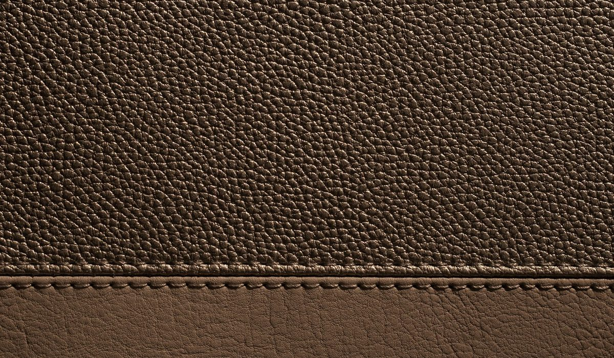
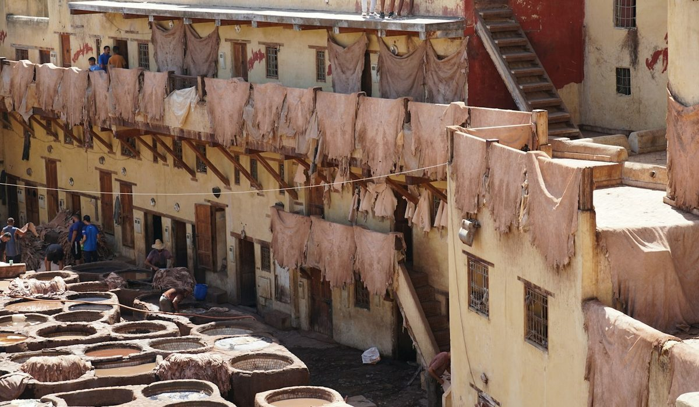

En bref
Un sac en cuir de qualité se reconnaît d'abord à son cuir, un cuir pleine fleur, noté 8,8/10 dans notre grille, dont on voit les pores et les petites irrégularités. Ensuite aux finitions, avec 3 à 4 points de couture par centimètre, des tranches lisses et teintées sans bourrelet, une doublure cousue et une quincaillerie lourde. La fleur corrigée (6,9/10) reste correcte, le refendu enduit et le cuir reconstitué (4,8 et 3,1/10) vieillissent mal.
- Un cuir pleine fleur de maroquinerie mesure en général de 1,0 à 1,4 mm d'épaisseur, un refendu enduit souvent moins de 0,9 mm sous sa couche de finition
- Une couture machine soignée compte 3 à 4 points par centimètre, sous 2,5 points elle trahit une piqûre rapide
- Le tannage au chrome concerne environ 85 % des cuirs produits dans le monde, le tannage végétal prend 30 à 60 jours au lieu d'une journée
- La mention « cuir reconstitué » désigne des fibres de cuir broyées et liées, la loi interdit de la vendre sous le simple nom de cuir
Sommaire de ce guide
Nos critères et leur poids
Une peau de vache se découpe en couches, et chaque couche donne un cuir différent. Le prix ne suit pas toujours. Nous avons donc noté chaque type de cuir sur ce qui compte après l'achat, pas sur l'impression du premier jour.
| Critère | Poids | Ce que nous regardons |
|---|---|---|
| Durabilité | 35 % | La résistance à la déchirure, à l'abrasion et à la flexion des plis |
| Vieillissement | 25 % | La patine, la tenue de la couleur, l'absence d'écaillage |
| Réparabilité | 20 % | Ce qu'un cordonnier maroquinier peut reteindre, recoudre ou rénover |
| Rapport qualité-prix | 20 % | Le prix rapporté à la durée de vie probable du sac |
Total 100 %. Notes établies pour un sac porté quatre à cinq jours par semaine.
Les types de cuir, de la pleine fleur au reconstitué
La pleine fleur est la couche supérieure de la peau, celle qui portait le poil. On n'y touche pas, ou à peine. Ses fibres sont les plus serrées, d'où sa résistance. Ses petits défauts, une veine, un pore plus ouvert, sont la preuve qu'elle n'a pas été poncée.
| Type de cuir | Note /10 | Ce que c'est | Comment le repérer | Tenue dans le temps | Prix d'un sac moyen |
|---|---|---|---|---|---|
| Pleine fleur, tannage au chromeNotre choix | 8,8 | Couche supérieure de la peau, non poncée | Pores visibles, petites irrégularités, souplesse | 15 ans et plus | 290 à 680 € |
| Pleine fleur, tannage végétal | 8,6 | Même peau, tannée aux tanins d'écorce | Odeur boisée, tranche brune, fonce à la lumière | 15 ans et plus, avec patine | 340 à 790 € |
| Cuir saffiano | 7,6 | Fleur pressée d'un motif croisé et vernie | Motif hachuré net, surface rigide | 10 à 15 ans | 320 à 890 € |
| Nubuck | 7,0 | Pleine fleur légèrement poncée en surface | Toucher velouté, marque sous le doigt | 8 à 12 ans | 260 à 540 € |
| Fleur corrigée | 6,9 | Fleur poncée puis recouverte d'un grain imprimé | Grain trop régulier, aspect uniforme | 8 à 10 ans | 170 à 420 € |
| Velours (croûte) | 6,2 | Couche inférieure de la peau, poncée | Duvet des deux côtés, pas de fleur | 5 à 8 ans | 140 à 360 € |
| Refendu enduit | 4,8 | Croûte recouverte d'un film synthétique | Surface plastique, tranche fibreuse | 2 à 4 ans, s'écaille | 75 à 190 € |
| Cuir reconstitué | 3,1 | Fibres de cuir broyées et liées | Aspect carton, aucune fibre visible | 1 à 3 ans | 40 à 130 € |
Note de qualité sur 10, prix constatés sur des sacs à main de format moyen dans le commerce français en octobre 2026. Durées estimées pour un usage quotidien et un entretien régulier. Notes et prix, relevé de démonstration du 5 octobre 2026.
La fleur corrigée part de la même couche, mais poncée pour effacer les défauts, puis recouverte d'un grain imprimé. Elle n'a rien de honteux, beaucoup de sacs très corrects en sont faits. Elle vieillit simplement moins bien, sans patine, et finit par marquer aux plis. Sous la fleur se trouve la croûte. Poncée, elle donne le velours. Recouverte d'un film de polyuréthane, elle devient un refendu enduit, souvent vendu comme cuir lisse à petit prix.
Tannage végétal ou au chrome
Le tannage au chrome, majoritaire dans le monde, prend une journée et donne un cuir souple, léger, stable à la lumière et peu sensible à l'eau. Le tannage végétal utilise des tanins d'écorce de châtaignier, de mimosa ou de quebracho. Il demande 30 à 60 jours, donne un cuir plus ferme, à l'odeur boisée, qui fonce et se patine. Il craint davantage l'eau. Aucun des deux n'est supérieur dans l'absolu. Le chrome convient au sac du quotidien, le végétal à celui qu'on veut voir vieillir.

Les six contrôles à faire en boutique
Pas besoin d'être maroquinier. Il faut deux minutes, une bonne lumière, et oser retourner le sac.
Les coutures
Comptez les points sur un centimètre, le long d'une anse. Trois à quatre points réguliers signalent une couture machine soignée. Sous 2,5 points, la piqûre a été faite vite. Un point sellier cousu main, reconnaissable à son léger biais, compte moins de points mais tient mieux, car un fil cassé ne défait pas toute la ligne. Vérifiez les arrêts aux extrémités, ils doivent être nets, sans fil qui dépasse.
Les tranches
La tranche est le bord coupé du cuir. Sur un sac de qualité, elle est poncée, teintée en plusieurs couches puis lissée, sans bourrelet ni bulle. Une tranche repliée et cousue, dite rembordée, est aussi un bon signe. Une tranche brute qui laisse voir des fibres grises ou une couche synthétique trahit un refendu.
La doublure
Une doublure en cuir, en suédine ou en toile de coton épaisse, cousue et non collée, tient dix ans. Une doublure synthétique fine se déchire au fond en deux ou trois ans, là où les clés frottent. Glissez la main, tirez légèrement aux coins. Rien ne doit bouger. Regardez aussi les poches intérieures, leurs coins doivent être renforcés d'un point d'arrêt.
La quincaillerie
Fermoirs, anneaux et pieds doivent être lourds en main, en laiton massif ou en zamak épais, et vissés ou rivetés plutôt que collés. Une fermeture éclair à dents métalliques, d'un fabricant reconnu, glisse sans à-coups. Une boucle qui sonne creux et légère s'usera vite au contact de la main. Retournez le sac et regardez le fond. Quatre pieds métalliques ou un fond renforcé d'une seconde épaisseur de cuir protègent les angles, qui s'usent les premiers sur un sac posé au sol dix fois par jour.
Le toucher et l'odeur
Une pleine fleur se plisse finement sous le pouce puis revient. Elle est tiède au toucher. Un refendu enduit reste froid, un peu collant, et plisse en grosses vagues. Le cuir sent le cuir. Une odeur chimique forte vient en général de la finition synthétique.
L'étiquette
La fiche doit dire de quel cuir il s'agit. « Cuir de vachette pleine fleur » est une information. « Véritable cuir » ou « genuine leather » seuls sont flous, et désignent souvent une croûte ou une fleur corrigée.
J'ai longtemps acheté des sacs à 120 € que je changeais tous les deux ans. Le jour où j'ai payé trois fois plus pour une pleine fleur, j'ai arrêté de compter. Il a six ans et il est plus beau qu'au premier jour. Une lectrice, 44 ans, Lille.
L'origine du cuir et de la fabrication
Le « made in » d'un sac désigne le pays de sa dernière transformation substantielle, pas celui où le cuir a été tanné. Un sac assemblé en Italie peut utiliser un cuir tanné ailleurs, et l'inverse. Les grands bassins européens ont chacun leur réputation.
| Pays | Région de référence | Spécialité | Ce qu'on y trouve |
|---|---|---|---|
| Italie | Toscane, Vénétie | Tannage végétal, cuirs lisses | Le plus grand bassin de tanneries d'Europe, des cuirs végétaux réputés pour leur patine |
| Espagne | Ubrique, Andalousie | Maroquinerie fine | Des ateliers qui fabriquent pour de nombreuses maisons françaises, Polène par exemple |
| France | Graulhet, Millau, Annonay | Mégisserie, veau et agneau | Peu de volume, des cuirs haut de gamme et une forte tradition de sellerie |
| Portugal | Région de Porto | Maroquinerie et chaussure | Une fabrication soignée à coût plus contenu, en forte progression |
Bassins de tannerie et de maroquinerie les plus présents sur les sacs vendus en France.
L'origine n'est pas une garantie à elle seule. Un sac espagnol en pleine fleur bien cousu vaut mieux qu'un sac italien en refendu enduit. Retenez l'ordre des priorités. Le cuir d'abord, les finitions ensuite, l'origine enfin. Des maisons françaises installées de longue date, comme Le Tanneur ou Lancaster, détaillent souvent le type de cuir sur leurs fiches, ce qui facilite la comparaison.

Comment choisir selon votre budget et votre usage
Le bon cuir dépend de la vie que mènera le sac. Inutile de payer une pleine fleur végétale pour un sac de plage, et dommage d'acheter un refendu pour un sac de bureau porté tous les jours.
Le sac du quotidien
Une pleine fleur tannée au chrome, grainée de préférence, autour de 290 à 450 €. Elle supporte la pluie, cache les rayures et se répare. C'est le meilleur investissement par jour de port.
Le sac qu'on veut garder vingt ans
Une pleine fleur au tannage végétal, coutures sellier, tranches teintées à la main. Comptez 340 à 790 €. Elle demande une première année attentive et devient ensuite unique.
Le petit budget
Sous 200 €, mieux vaut une fleur corrigée honnêtement étiquetée qu'un refendu enduit présenté comme cuir lisse. Ou une belle toile enduite, qui ne prétend pas être du cuir et vieillit mieux qu'un faux cuir.
Notre verdict
Un sac en cuir de qualité se juge en deux minutes. Une pleine fleur aux pores visibles, 3 à 4 points de couture par centimètre, des tranches lisses et teintées, une doublure cousue et une quincaillerie lourde. Si ces cinq signes sont réunis, le sac durera plus de dix ans, quel que soit son pays d'origine.
Si votre priorité est la robustesse au quotidien, prenez une pleine fleur tannée au chrome, grainée. Si votre priorité est la patine et la transmission, prenez un tannage végétal. Si votre budget reste sous 200 €, préférez une fleur corrigée clairement étiquetée à un cuir dont la fiche reste vague.
Questions fréquentes
Quelle est la différence entre cuir pleine fleur et fleur corrigée ?
Le cuir pleine fleur est la couche supérieure de la peau, conservée intacte avec ses pores et ses petites irrégularités. La fleur corrigée est la même couche, poncée puis recouverte d'un grain imprimé. La pleine fleur dure plus de 15 ans et se patine, la fleur corrigée tient 8 à 10 ans sans patine.
Combien de points de couture par centimètre sur un sac de qualité ?
Une couture machine soignée compte 3 à 4 points réguliers par centimètre sur un sac en cuir de qualité. Sous 2,5 points par centimètre, la piqûre a été faite rapidement. Un point sellier cousu main compte un peu moins de points mais résiste mieux, car un fil cassé ne défait pas la ligne entière.
Est-ce que le tannage végétal est meilleur que le tannage au chrome ?
Le tannage végétal n'est pas meilleur, il est différent. Il prend 30 à 60 jours, donne un cuir ferme qui fonce et se patine, mais craint davantage l'eau. Le tannage au chrome, qui concerne environ 85 % des cuirs, donne un cuir souple, léger et stable, mieux adapté à un sac porté tous les jours.
Est-ce qu'un sac en cuir fabriqué en Italie est forcément de meilleure qualité ?
Non, un sac fabriqué en Italie n'est pas forcément meilleur qu'un sac espagnol, portugais ou français. Le « made in » désigne le pays de la dernière transformation, pas celui du tannage, et la qualité dépend d'abord du type de cuir et des finitions. Un sac en pleine fleur cousu en Espagne vaut mieux qu'un refendu enduit assemblé en Italie.
Comment savoir si un sac est en vrai cuir ou en cuir reconstitué ?
Le cuir reconstitué, fait de fibres broyées et liées, a un aspect de carton et une tranche sans fibre visible. Il coûte en général de 40 à 130 € et ne peut pas être vendu sous le simple nom de cuir. Un vrai cuir pleine fleur montre des pores irréguliers, plisse finement sous le pouce et reste tiède au toucher.
Comment sont notés les types de cuir ?
Chaque type de cuir est noté sur quatre critères, la durabilité (35 %), le vieillissement (25 %), la réparabilité (20 %) et le rapport qualité-prix (20 %). La pleine fleur tannée au chrome obtient 8,8/10, le cuir reconstitué 3,1/10. Les notes et les prix proviennent d'un relevé de démonstration du 5 octobre 2026.
Notre méthode
Ce classement repose sur des relevés faits sur les sites officiels et en boutique, refaits chaque mois.
- Les prix sont relevés sur les sites officiels des marques en France, hors soldes et hors code promo, à la date indiquée
- Les matières, l'origine de fabrication et les dimensions sont celles affichées sur les fiches produit
- Chaque sac est porté et rempli en conditions réelles, ordinateur, trousse, gourde et parapluie compris
- Les avis clients vérifiés sont lus un par un sur la tenue des anses, des coins et des finitions
- Les services (livraison, retours, réparation, seconde main) sont testés sur une commande réelle par marque